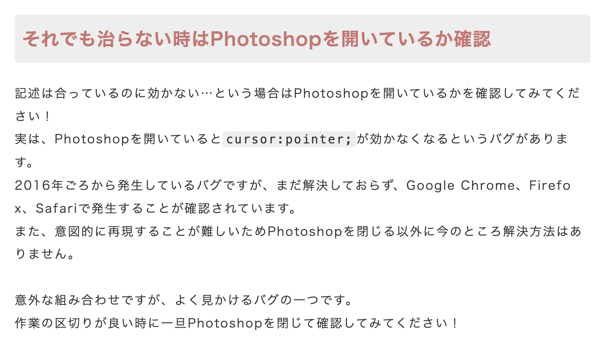

ユーザーガイド
電源を入れる
二匹を向かい合うように置き、それぞれの下アゴの陰にある灰色の電源スイッチを上に切り替えます。
接続したいPCなどでBluetooth管理画面を開き、「Fish Keyboard」が表示されたら接続します。適当なキーを押して、入力が通っているか確認してください。
info接続できないときは
以下のような原因が考えられます。
・ほかのホストに接続中のとき
BT_SEL（空いているプロファイル番号）が割り当てられたキーを押下し、新しいプロファイルとのペアリングモードに入れてください。プロファイルがいっぱいの場合は、BT_CLEARが割り当てられたキーを押下し、不要なペアリングを解放してください。
・バッテリーの残量が少ないとき
充電するの手順で各機を充電してください。
・ファームウェアに問題がある場合
キーマップを変えるの手順で両機のファームウェアを修正・更新してください。
・PC側に問題がある場合
他のBluetooth機器にも接続できないことを確認し、調査・対処してください。
・いずれの可能性も排除された場合
接触不良かもしれません。状況や試したことまとめてDiscordに投稿してください。
充電する
USB Type-C端子のケーブル（別売り）を用意し、電源スイッチを入れたおさかなとPCを有線接続してください。
うまく充電できていれば、口の横が緑色に光ります。
ちなみに、USB接続と電源スイッチのオン／オフによって、おさかなは以下のように動作します。
| USB接続あり | USB接続なし | |
| 電源 オン |
USBから取電し、バッテリーを充電しながら動作します。親機ならUSBで入力を送信しますが、&outキーでBlueTooth発信にも切り替えられます。 | バッテリー電源で動作し、Bluetoothで入力を発信します。通常はこの状態で使用してください。 |
| 電源 オフ |
USB電源で動作し、入力もUSBで送信します。ただし、子機はいかなる場合でもBluetoothで親機に入力を発信します。 | 動作しません。長時間使用しないときはこの状態にしてください。 |
info親機と子機
おさかなキーボードには親機と子機があり、まず子機が親機に入力を伝え、それを合わせた入力を親機がPCに伝えます。
このため、親機のみ電源を入れて使うことはできますが、逆はできません。左手デヴァイスとしての使用に配慮し、出荷時は左手側を親機に設定しています。
また同じ理由から、子機は親機の４倍ほど充電が長持ちします。
一部のPCから確認できる充電残量は親機のもので、子機の充電残量を確認する方法はありません。勘で充電してください。
キーマップを変える
購入時のキーマップは以下のようになっています。
これは、以下の手順で自由に書き換えることができます。
1. Githubのアカウントを用意する。
2. リポジトリをフォークする。
3. キーマップエディターでfish.keymapを生成するか、テキストエディターで直接編集する
4. リポジトリのファイルと差し替えて、actionsからfirmwareをダウンロードする。
5. おさかなの両機の電源を切った状態で、片方だけをPCとUSB接続し、リセットボタンを素早く２回押す。
6. XIAOが外部ストレージとして表示されるので、左手機ならleft.uf2、右手機ならright.uf2をドラッグ＆ドロップする。
7. 読み込まれたら自動で消えるので、反対側も同様に行う。